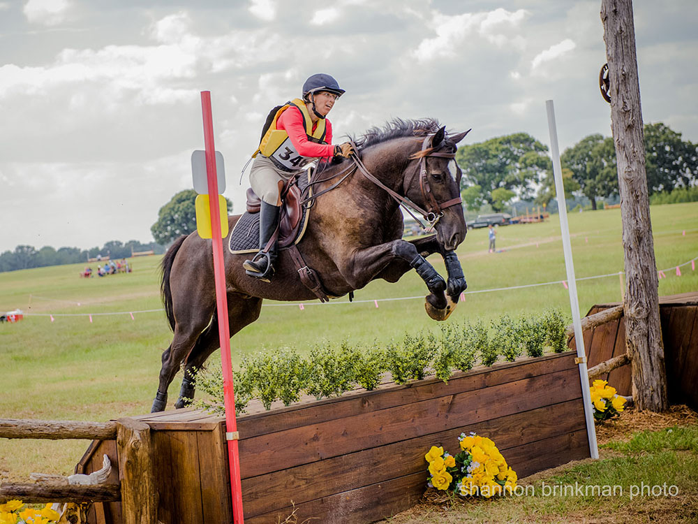

I felt it was a win for us that I even put Miaren on the trailer
and headed to the event.
Our dressage was average, but I was so proud that we held it together
through the warm up and
there were parts of our test that I was so happy with. We've done better,
but not with that much excitement going on.
Our XC warm up was crazy and I had to keep my mouth shut so I wouldn't
just scratch right there. Once on the course
we had quite a bit of fun and everything went well until the ditch with
gravel in it. I did nurse him over after
a few stops, so we were out of the running, but we weren't eliminated and
had one more day to play.
For stadium a friend's trainer stepped in for Meg, who was on her way on a
cruise, and we tooled around the
intimidating course nicely. One rail, off a corner and the wrong lead, but
we'd finished, which was the goal when we started.
Dressage
Cross Country
Stadium
Clean and braided.
Some
times he'd stretch down into the bridle, but there was also a bit of
looking around.
We'd definitely peaked earlier in the season, but he was happy to be
here and obedient.
Balancing on the turn.
And another turn coming up.
Across the diagonal. Not soft to the bit, but engaged.
I think we will always be working to get him to sit in his canter. I was
happy with what he gave me, but the judge wanted better.
Happy with his halt.
First intimidating jump on course. Miaren was feeling great and just
wanted to run.
Not thinking so much about my jumping position on course, as I was
worried about the jump coming up.
A bit more upright telling him where the next jump was and taking a
feel.
I could tell he knew where we were going, so letting him gallop a bit on
the way.
The jump after the (nasty) little ditch. I wasn't sure if we were going
to be eliminated, but once they let us jump here we kept going.
That parallel oxer looked big when we were walking the course. Miaren
took it just right.
Being sure I wasn't pulling too much and thinking ahead.
On the way to the drop.
He decided to walk down and I was giving him as much rein as possible to
let him look. Then there's all the gathering back up.
Not the fast trot please. We'd really rather be in canter for the jumps.
Yeah, canter.
All muscled up and fit from a year of work.
Looking sleepy over the fence. He wasn't really tired, though.
Last fence as eager as the first.
Grabbing mane so I don't
have to worry about interferring. And that's what a tired Jennifer looks
like.
Such a cool horse.
Pleased with himself heading back to the barns.
First jump on course. A bit nervous on my side, but we settled after
this fence.
We were great with our spots this go round.
He puts in nice smooth rounds.
Me a little far out of the saddle, eager to do the combination.
Happy he didn't care about the towers, but a bit too close to this jump
and it came down.
Balancing himself for the next fence.
Hard to believe we were at the Championships.
Looking for the last fence.
I love how he reaches with his front end over the fence.